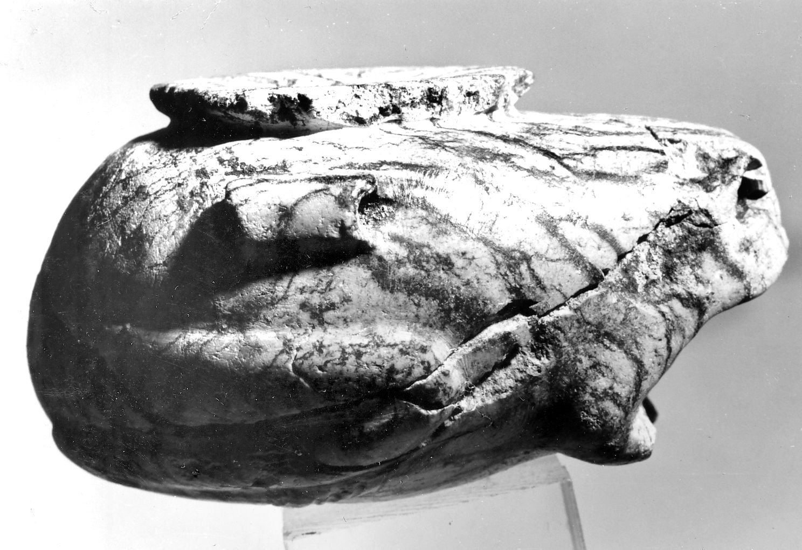

#003 · producto · 1600x1200 · CC0 · Openverse A flat lay of everyday items on a wooden surface, including a smartwatch, a pair of black eyeglasses, a black wireless earbud case, a smartphone displaying a hand reflection on its screen, and a black wallet. · smartwatch screen · Nur Nobi https://wordpress.org/photos/photo/14568e4010/

#004 · producto · 1488x1021 · BY · Openverse Vessel · cosmetics jar white · https://www.brooklynmuseum.org/opencollection/objects/96484#005 · producto · 1600x1071 · CC0 · Openverse Pair of 8kg dumbbells (Unsplash) · dumbbells pair · Cyril Saulnier c_reel https://commons.wikimedia.org/w/index.php?curid=62290561